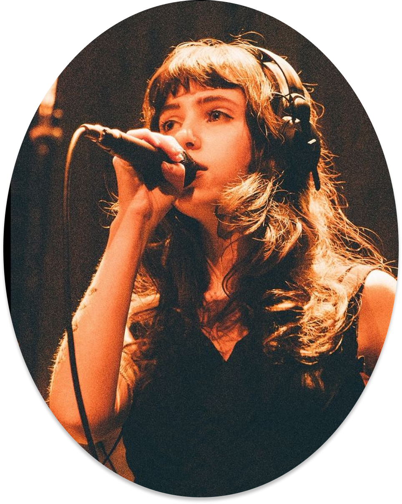
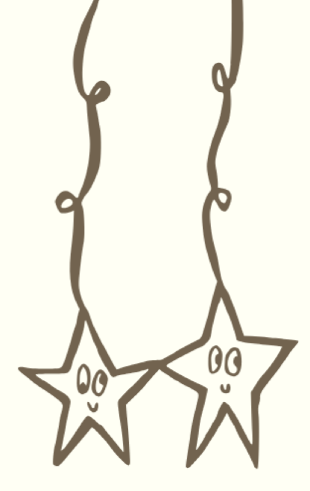

Artist biography
Clairo (Claire Cottrill)
Clairo, born Claire Cottrill, is a singer-songwriter and producer from Carlisle, Massachusetts. She first gained widespread attention as a teenager when her song "Pretty Girl" went viral online, introducing listeners to her understated vocals and intimate, DIY sound.
Her artistry is shaped by gentle melodies, confessional lyrics, and a warm, lo-fi aesthetic that has evolved into richer, more mature production. Her music often feels like a diary entry: quiet, vulnerable, and deeply personal, capturing the complexities of growing up with a soft, reflective touch.
In 2019, Clairo released her debut album Immunity, produced alongside Rostam. The project blended indie pop and alternative R&B, earning acclaim for its emotional honesty and songs like "Bags" and "Sofia." It marked her transition from viral newcomer to a respected artist with a clear sonic identity.
A sound that keeps growing
Her second studio album, Sling, arrived in 2021 and showcased a more introspective, folk-inspired direction. Written during a period of personal growth and produced with Jack Antonoff, the album explored themes of identity, mental health, and the pressures of early fame.
Clairo continues to shape her next chapter with music that feels gentle, introspective, and quietly powerful. She has a rare ability to turn small, personal moments into something universally resonant, making her songs feel like a safe place to land.